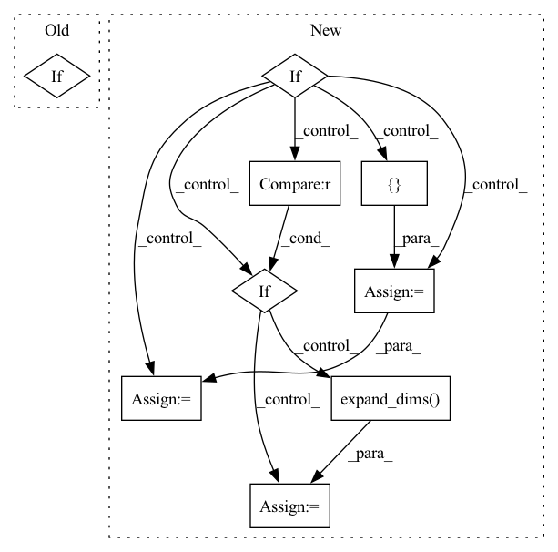

Pattern ID :32236
Before Change
//------------------------------------------------//
// 将新图片和原图片混合
//------------------------------------------------//
if self.blend:
image = Image.blend(old_img,image,0.7)
return imageAfter Change
//---------------------------------------------------//
pr = pr.argmax(axis=-1)
if self.mix_type == 0:
// seg_img = np.zeros((np.shape(pr)[0], np.shape(pr)[1], 3))
// for c in range(self.num_classes):
// seg_img[:, :, 0] += ((pr[:, :] == c ) * self.colors[c][0]).astype("uint8")
// seg_img[:, :, 1] += ((pr[:, :] == c ) * self.colors[c][1]).astype("uint8")
// seg_img[:, :, 2] += ((pr[:, :] == c ) * self.colors[c][2]).astype("uint8")
seg_img = np.reshape(np.array(self.colors, np.uint8)[np.reshape(pr, [-1])], [orininal_h, orininal_w, -1])
//------------------------------------------------//
// 将新图片转换成Image的形式
//------------------------------------------------//
image = Image.fromarray(np.uint8(seg_img))
//------------------------------------------------//
// 将新图与原图及进行混合
//------------------------------------------------//
image = Image.blend(old_img, image, 0.7)
elif self.mix_type == 1:
// seg_img = np.zeros((np.shape(pr)[0], np.shape(pr)[1], 3))
// for c in range(self.num_classes):
// seg_img[:, :, 0] += ((pr[:, :] == c ) * self.colors[c][0]).astype("uint8")
// seg_img[:, :, 1] += ((pr[:, :] == c ) * self.colors[c][1]).astype("uint8")
// seg_img[:, :, 2] += ((pr[:, :] == c ) * self.colors[c][2]).astype("uint8")
seg_img = np.reshape(np.array(self.colors, np.uint8)[np.reshape(pr, [-1])], [ orininal_h, orininal_w, -1 = Image.fromarray(np.uint8(seg_img))
elif self.mix_type == 2 :
seg_img = (np.expand_dims( pr != 0, -1) * np.array(old_img, np.float32)).astype("uint8")
//------------------------------------------------//
// 将新图片转换成Image的形式
//------------------------------------------------//
image = Image.fromarray(np.uint8(seg_img))
return image
In pattern: SUPERPATTERN
Frequency: 3
Non-data size: 9
Instances Fragment ID: 94341791
Project Name: bubbliiiing/hrnet-pytorch
Commit Name: e53724ea45003d8acd5d8b5465fa97038d486824
Time: 2022-03-19
Author: 3323290568@qq.com
File Name: hrnet.py
M Class Name: HRnet_Segmentation
N Class Name: HRnet_Segmentation
M Method Name: detect_image(2)
N Method Name: detect_image(2)
M Parent Class: object
N Parent Class: object
M File Name: hrnet.py
N File Name: hrnet.py
M Start Line: 153
M End Line: 170
N Start Line: 113
N End Line: 188
Before Change
//------------------------------------------------//
// 将新图片和原图片混合
//------------------------------------------------//
if self.blend:
image = Image.blend(old_img,image,0.7)
return image
After Change
//------------------------------------------------//
image = Image.blend(old_img, image, 0.7)
elif = np.reshape(np.array(self.colors, np.uint8)[np.reshape(pr, [ -1 = Image.fromarray(np.uint8(seg_img))
elif self.mix_type == 2 :
seg_img = (np.expand_dims( pr != 0, -1) * np.array(old_img, np.float32)).astype("uint8")
//------------------------------------------------//
// 将新图片转换成Image的形式
//------------------------------------------------//
Fragment ID: 94341789
Project Name: bubbliiiing/pspnet-pytorch
Commit Name: 373340e315d6e9a029041ec293673c06c3c1cb7e
Time: 2022-03-04
Author: 3323290568@qq.com
File Name: pspnet.py
M Class Name: PSPNet
N Class Name: PSPNet
M Method Name: detect_image(2)
N Method Name: detect_image(2)
M Parent Class: object
N Parent Class: object
M File Name: pspnet.py
N File Name: pspnet.py
M Start Line: 155
M End Line: 172
N Start Line: 115
N End Line: 190
Before Change
if regressor_config is not None:
regressors = pd.DataFrame()
for reg in df.columns:
if reg in regressor_config:
regressors[reg] = df[reg]
// Make sure column order is consistentAfter Change
additive_regressors, multiplicative_regressors = make_regressors_features(df, regressors_config)
regressors = OrderedDict({})
if n_lags == 0:
if additive_regressors is not None:
regressors["additive"] = np.expand_dims(additive_regressors, axis=1)
if multiplicative_regressors is not None :
regressors["multiplicative"] = np.expand_dims( multiplicative_regressors, axis=1)
else:
if additive_regressors is not None:
additive_regressor_feature_windows = []
for i in range(0, additive_regressors.shape[1]):
// stride into num_forecast at dim=1 for each sample, just like we did with time
additive_regressor_feature_windows.append(_stride_time_features_for_forecasts(additive_regressors[:, i]))
additive_regressors = np.dstack(additive_regressor_feature_windows)
regressors["additive"] = additive_regressors
if multiplicative_regressors is not None:
multiplicative_regressor_feature_windows = []
for i in range(0, multiplicative_regressors.shape[1]):
// stride into num_forecast at dim=1 for each sample, just like we did with time
multiplicative_regressor_feature_windows.append(
_stride_time_features_for_forecasts(multiplicative_regressors[:, i]))
multiplicative_regressors = np.dstack(multiplicative_regressor_feature_windows)
regressors["multiplicative"] = multiplicative_regressors
inputs["regressors"] = regressors
Fragment ID: 94341786
Project Name: ourownstory/neural_prophet
Commit Name: 71ff07c9baa8002f2611b7f6d3f8f94825e59b1b
Time: 2020-09-14
Author: hansika.hewamalage@monash.edu
File Name: neuralprophet/time_dataset.py
M Class Name: AnonimousClass
N Class Name: AnonimousClass
M Method Name: tabularize_univariate_datetime(10)
N Method Name: tabularize_univariate_datetime(10)
M Parent Class:
N Parent Class:
M File Name: neuralprophet/time_dataset.py
N File Name: neuralprophet/time_dataset.py
M Start Line: 195
M End Line: 213
N Start Line: 201
N End Line: 267